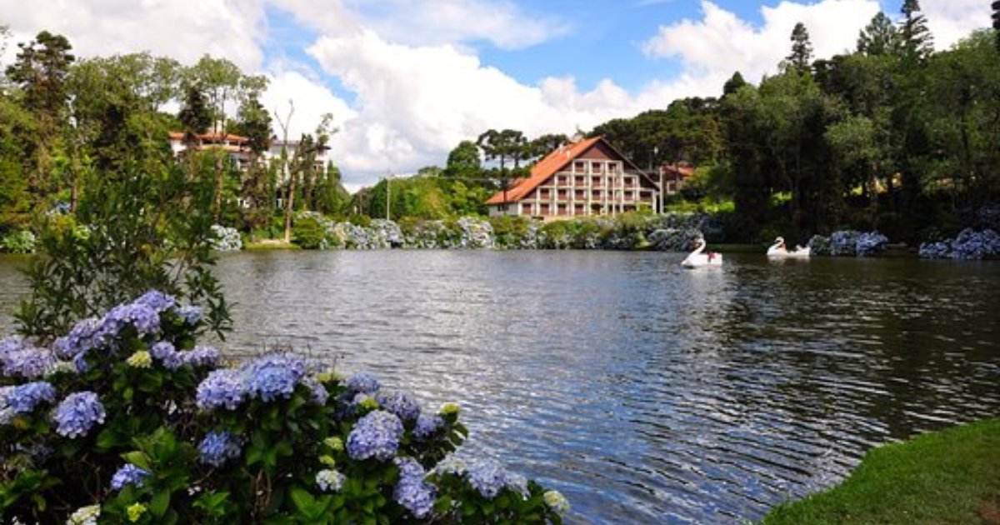
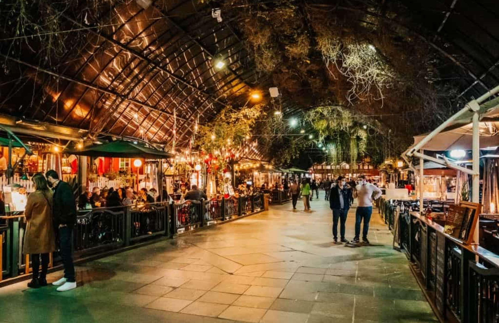

👤 Visitante

Pontos Turísticos em Santa Catarina
Quer descobrir novos destinos e viver experiências inesquecíveis? Temos algumas sugestões de pontos turísticos que vão encantar você!

Mini Mundo
Um parque temático com réplicas em miniatura de edifícios famosos, sendo uma atração encantadora, onde os visitantes podem explorar modelos detalhados de várias construções de diferentes partes do mundo.

Lago Negro
Um dos cartões-postais mais famosos da cidade, o Lago Negro é um belo local para passeios de pedalinho, caminhadas ao redor do lago e para admirar a natureza exuberante.

Rua Coberta
Um ponto turístico muito visitado, a Rua Coberta é uma charmosa rua no centro de Gramado, repleta de lojas, restaurantes e cafés, oferecendo um ambiente acolhedor, especialmente durante o inverno e festividades.